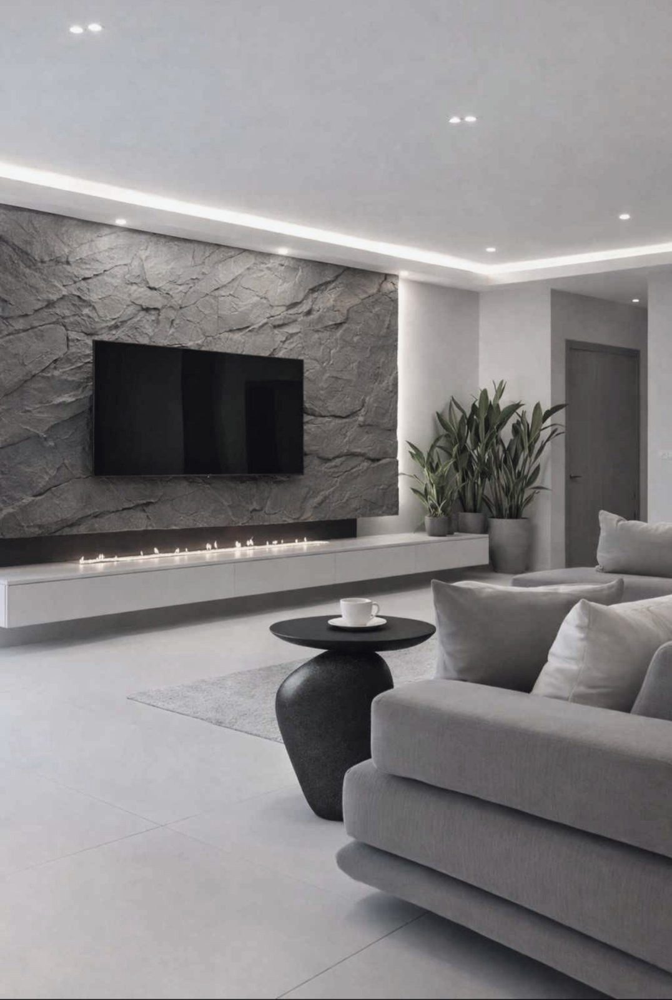

Paneles Decorativos

Living

Chimenea

Escaleras

Mobiliario y superficies escultóricas inspiradas en la filosofía Wabi Sabi y el diseño Japandi.
Explorar colecciónCreamos piezas que transforman espacios. Inspirados por la piedra, la naturaleza y la arquitectura contemporánea, desarrollamos mobiliario ligero con apariencia pétrea, fabricado artesanalmente en Ecuador.



(+593) 96 274 1940
wabihome.info@gmail.com
Solicitar Cotización